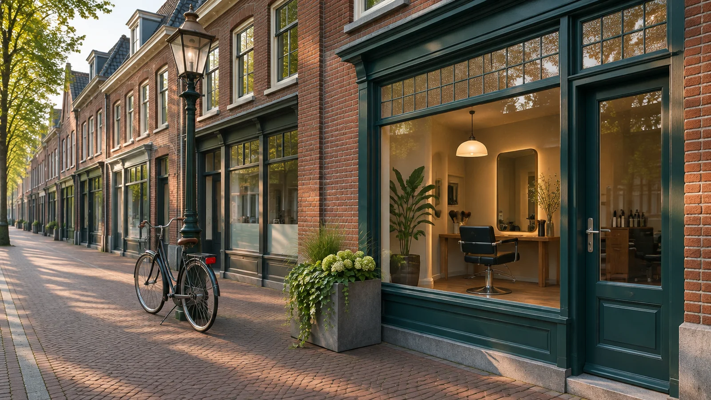
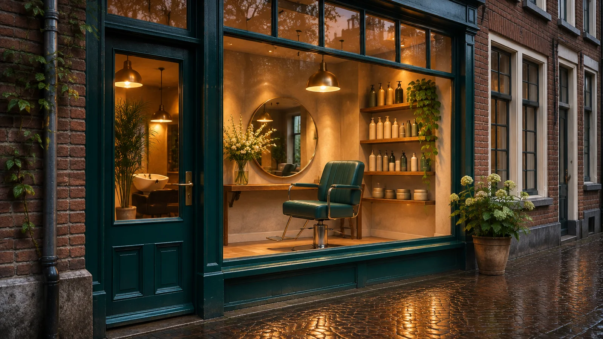

een kapsalon om de hoek.
Haar! is een kapsalon aan de Grotestraat in Waalwijk. Een plek om even te zitten, goed geholpen te worden en met haar dat glanst weer naar buiten te lopen.

Kapsalon in WaalwijkSfeerbeeld — niet de echte geveleen kapsalon om de hoek.
Haar! is een kapsalon aan de Grotestraat in Waalwijk. Een plek om even te zitten, goed geholpen te worden en met haar dat glanst weer naar buiten te lopen.
een gewone straat.
Een ochtend in Waalwijk.

Sfeerbeeld — niet de echte gevelen daar brandt het licht.
Een salon herken je aan het warme raam.
meer dan een knipbeurt.
Een kapsalon is een bijzonder soort plek. Je komt voor je haar, maar je blijft even voor de rust. Je gaat zitten, de cape gaat om, en een tijdje hoef je niets anders dan achteroverleunen. Voor veel mensen is dat het enige moment in de week waarop iemand anders voor hen zorgt.
Kleuren is daarbij misschien wel het mooiste deel van het vak. Het is scheikunde en gevoel tegelijk: weten wat een kleur doet op jouw haar, en zien wat bij jou past. Als het goed is, zie je het niet eens als "geverfd" — dan is het gewoon jouw haar, alleen mooier.
Haar! zit aan de Grotestraat 393 in Waalwijk en is open op dinsdag, donderdag, vrijdag en zaterdag. Wil je weten hoe het eruitziet? Kom gerust even langs, of kijk op Facebook.

Omdat een goede kleur bij jóu past.
Omdat glans begint bij verzorging.
Omdat even zitten ook goed is.
dit verhaal vertellen ze zelf.
Dit vertelt Haar! zelf — wordt ingevuld na overleg.
nieuws uit de salon.
Haar! heeft een Facebookpagina. In de echte site laten we hier het nieuwste werk en nieuws uit de salon zien.
Hier komen foto's van de salon, de stoelen en het team van Haar!

tot zo in de stoel.
Plan je afspraak online in een minuut, of bel even als je liever iemand spreekt. Je vindt Haar! aan de Grotestraat 393 in Waalwijk.